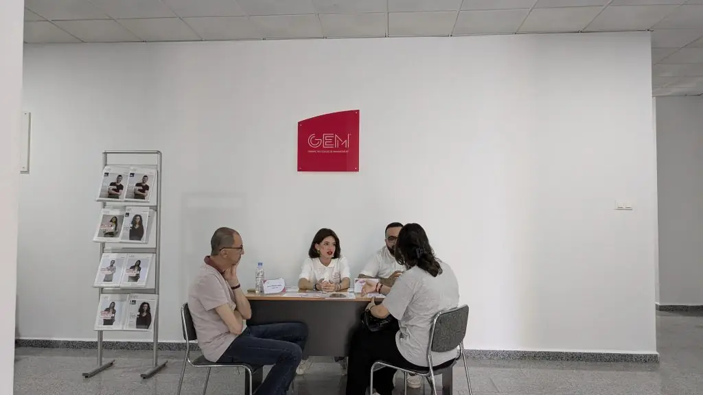
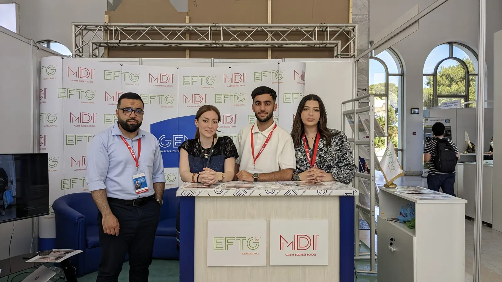

Admissions en Licence et en Master, simplement.
Rentrée 2027 : les dates de préinscription, des journées d’orientation et du concours seront annoncées dans les actualités. Le parcours ne change pas : un rendez-vous d’orientation, une préinscription, puis un concours en deux temps, écrit puis entretien.

Deux voies d’entrée
Après le Bac, ou après une Licence.
Deux publics, deux parcours d’admission. Dans les deux cas, tout commence par une préinscription, en ligne ou au campus, et tout passe par un échange avec le jury des admissions.

Licences · après le Bac
Cinq étapes jusqu’à la rentrée.
- Rendez-vous d’orientation
Un entretien personnalisé avec un conseiller pédagogique, sur le campus de Chéraga, pour choisir sa Licence parmi les quatre et recevoir la grille des frais. En 2026, les journées d’orientation se sont tenues du 30 juin au 31 juillet.
- Préinscription
En ligne ou au campus. Le service des admissions remet la liste des pièces à fournir et communique les dates des sessions de concours.
- Concours : écrit, puis entretien
Des épreuves écrites, suivies d’un entretien de motivation avec le jury des admissions. Plusieurs sessions sont organisées jusqu’à la mi-septembre : en 2025, le 6 septembre puis les 13 et 14 septembre.
- Admission et inscription
La décision du jury vous est communiquée par le service des admissions ; l’inscription définitive se fait ensuite auprès de lui, selon les modalités présentées lors du rendez-vous d’orientation.
- Rentrée : journées d’intégration
Trois jours d’ateliers animés par des professionnels (en 2025 : Emploitic, i-Yusr, U.Builders), découverte du campus et de l’équipe pédagogique. Rentrée : fin septembre – début octobre (en 2025, semaine d’intégration du 30 septembre au 2 octobre).
Masters · après une Licence
Du test à la leçon inaugurale.
- Préinscription
En ligne ou au campus, pour les titulaires d’une Licence (Bac+3) ou d’un diplôme équivalent, quelle que soit l’université d’origine, et pour les étudiants en dernière année de Licence.
- Test écrit de type EPAGE
Un exemple de sujet est envoyé aux candidats préinscrits pour qu’ils puissent se préparer. En 2025, les Masters ont composé le 7 septembre, puis les 13 et 14 septembre.
- Entretien individuel
Un entretien avec le jury d’admission : votre parcours, vos motivations, votre projet professionnel. Le calendrier et les modalités vous sont communiqués par le service des admissions après la préinscription.
- Admission et inscription
La décision du jury vous est communiquée par le service des admissions ; l’inscription définitive se fait ensuite auprès de lui, selon les modalités présentées lors du rendez-vous d’orientation.
- Rentrée : leçon inaugurale
L’année des Masters s’ouvre par la leçon inaugurale d’un dirigeant : en 2025, Abdenour Houaoui, CEO de Hamoud Boualem, le 5 octobre.
Calendrier
Une année type, de la préinscription à la rentrée.
Les dates changent chaque année ; voici les repères qui se répètent, avec les dates réelles des dernières campagnes.
| Période | Étape | Repères |
|---|---|---|
| Printemps – été | Ouverture des préinscriptions | En 2026, les annonces « Inscriptions ouvertes » Licence et Master ont été publiées le 20 juillet ; préinscription en ligne ou au campus. MDI est aussi présente sur les salons de l’étudiant (Khotwa, en avril 2025). |
| Juin – juillet | Journées d’orientation | Entretiens personnalisés avec les conseillers pédagogiques sur le campus. En 2026 : du 30 juin au 31 juillet. |
| Été – mi-septembre | Sessions de concours | Épreuves écrites et entretiens, en plusieurs sessions jusqu’à la mi-septembre. En 2025 : les 6 et 7 septembre, puis les 13 et 14 septembre. |
| Fin septembre – début octobre | Rentrée | Journées d’intégration pour les Licences, leçon inaugurale pour les Masters. En 2025 : semaine d’intégration des Licences du 30 septembre au 2 octobre, leçon inaugurale des Masters le 5 octobre. |
Rentrée 2027
Les dates 2027 seront annoncées dans les actualités.
Préinscriptions, journées d’orientation et sessions de concours sont annoncées dans les actualités de l’école et communiquées directement aux candidats préinscrits ; se préinscrire tôt reste le plus sûr.

Le concours en pratique
Ce qui vous attend le jour J.
Un processus exigeant, mais sans surprise : tout ce que l’on peut préparer vous est communiqué à l’avance.
Licences et Masters
Les épreuves écrites
Le concours s’ouvre par des épreuves écrites, organisées sur le campus de Chéraga en plusieurs sessions entre l’été et la mi-septembre. Les dates sont publiées dans les actualités et communiquées aux candidats préinscrits.
Licences et Masters
L’entretien de motivation
Après l’écrit, un entretien avec le jury des admissions : votre parcours, vos motivations, votre projet professionnel. Le calendrier et les modalités vous sont communiqués par le service des admissions après la préinscription.
Masters
Le test EPAGE
Le test écrit des Masters est de type EPAGE. Un exemple de sujet est envoyé aux candidats préinscrits afin qu’ils puissent se préparer dans de bonnes conditions.
Pièces à fournir
Le dossier de candidature
La liste des pièces à fournir vous est remise par le service des admissions lors de la préinscription, avec la grille des frais. Contact : academique.edu@mdi-alger.com · 0560 93 94 10.
Nous sélectionnons des esprits brillants et ambitieux grâce à un processus d’admission exigeant : des épreuves écrites, suivies d’un entretien de motivation avec le jury des admissions.
MDI Algiers Business School, retour sur le concours d’admission 2025
Bourses
Trois catégories de bourses pour les 30 ans.
Pour son 30e anniversaire, MDI a lancé les MDI Excellence Scholarships pour la rentrée de septembre 2026, en trois catégories ; pour la rentrée 2027, le service des admissions indique si le programme est reconduit et selon quels critères. En 2025, les bacheliers ayant au moins 14/20 au Bac et réussi le concours pouvaient obtenir jusqu’à 100 % des frais. Les bourses d’entreprises et le prêt étudiant Al Salam Bank complètent le dispositif.
Catégorie 1
Graduates Scholarships
Première catégorie du programme 2026 ; public visé, critères et calendrier 2027 auprès du service des admissions, si le programme est reconduit.
Les critèresCatégorie 2 · Master
Academic Excellence Scholarships
Réservée en 2026 aux candidats aux Masters ; critères 2027 (si le programme est reconduit) auprès du service des admissions. Repère : en 2025, bourses partielles ou totales pour les titulaires d’une Licence ayant d’excellents résultats académiques, une forte motivation et un projet professionnel clair.
Les critèresCatégorie 3
Social Value Scholarships
Troisième catégorie du programme 2026, qui traduit la volonté de l’école de promouvoir l’égalité des chances. Critères 2027 et dossier, si le programme est reconduit, auprès du service des admissions : admission@mdi-alger.com.
Les critères et le dossierQuestions fréquentes
Les réponses qu’on nous demande le plus.
Reconnaissance des diplômes, déroulement du concours, Masters après une autre université, frais : quatre réponses pour commencer, et une page entière pour le reste.
Les diplômes de MDI sont-ils reconnus par l’État ?
Oui. MDI Algiers Business School est un établissement privé d’enseignement supérieur agréé par le Ministère de l’Enseignement Supérieur et de la Recherche Scientifique (MESRS).
Selon le ministère, les diplômés des établissements privés agréés peuvent poursuivre en second ou en troisième cycle dans un établissement public après équivalence de leur diplôme : le service des admissions vous indique l’intitulé exact du diplôme de chaque formation.
Comment se déroule le concours d’admission ?
Le concours comprend des épreuves écrites puis un entretien de motivation avec le jury d’admission. Pour les Masters, le test écrit est de type EPAGE ; un exemple de sujet est envoyé aux candidats préinscrits pour qu’ils puissent se préparer.
Plusieurs sessions sont organisées entre l’été et la mi-septembre. Les dates sont publiées dans les actualités et communiquées aux candidats préinscrits.
Puis-je intégrer un Master avec une licence obtenue dans une autre université ?
Oui. Les Masters sont ouverts aux titulaires d’une Licence (Bac+3) ou d’un diplôme équivalent, quel que soit l’établissement d’origine, ainsi qu’aux étudiants en dernière année de Licence. L’admission se fait sur test écrit et entretien.
Combien coûtent les études ?
Les frais de scolarité et les modalités de paiement vous sont présentés lors de votre rendez-vous d’orientation. Contactez le service des admissions pour recevoir la grille tarifaire de la formation qui vous intéresse.
Candidater
Candidater commence par un rendez-vous.
Choisissez l’objet de votre demande : un conseiller pédagogique vous recontacte pour fixer un entretien sur le campus ou vous envoyer la grille des frais de la formation choisie. Licence ou Master, le point de départ est le même.
Et ensuite ?
- Un conseiller pédagogique vous recontacte pour fixer le rendez-vous sur le campus de Chéraga.
- Au rendez-vous : la grille des frais de la formation choisie.
- Puis la préinscription et le concours : épreuves écrites et entretien.
Service des admissions
Boulevard El Moudjahid Assad FodileRoute de Ouled Fayet, Chéraga
Alger, Algérie
0560 93 94 10 · 0560 93 94 14
academique.edu@mdi-alger.com (nouvel onglet)
Bourses et MDI Excellence Scholarships : admission@mdi-alger.com (nouvel onglet)
Cadre ou dirigeant ? Les programmes Executive (DBA, MBA, cycles certifiants, inter et intra-entreprises) ont leur propre procédure : formulaire Executive Education · le catalogue · 0560 93 94 17
Nous joindre
Pour toute question, appelez-nous.
Le service des admissions vous renseigne sur les formations, les sessions de concours, les frais et les bourses, et vous reçoit sur le campus de Chéraga, boulevard El Moudjahid Assad Fodile, route de Ouled Fayet.